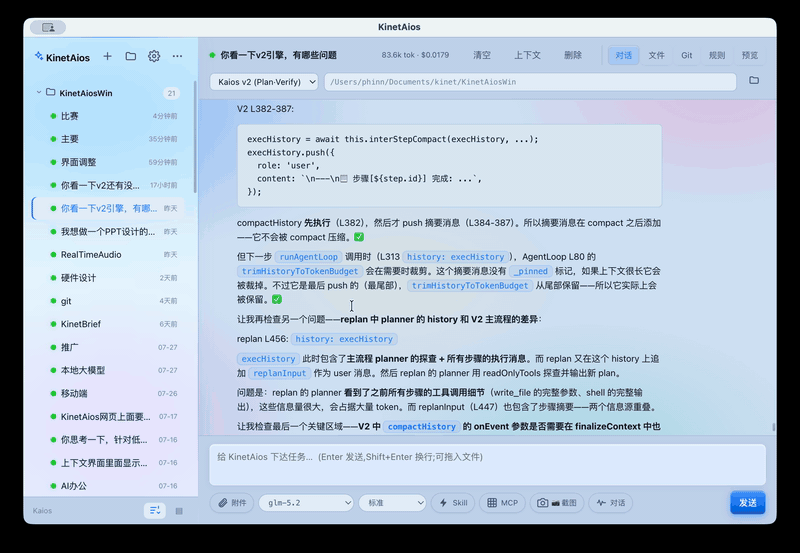

$39 once — replaces $240+/yr of AI tool subscriptions. KinetAios for Mac runs Direct V1/V2/V3, Claude Code, Codex, and DeepSeek Harness side-by-side. Local SQLite memory, no account, no relay server — your LLM API key is the only auth.
One-time purchase. Early bird $39 / ¥199 — first 500 licenses, then $69 / ¥268. Includes 1 year of major updates, works forever. Not a subscription.

Walkthrough: open KinetAios → pick "Use Ollama" → run a prompt → switch to Claude (BYOK) → compare side-by-sideSame real-world task — medical CRM cross-analysis, multi-sheet xlsx with hundreds of thousands of rows, ECharts report output — run on four engines. Full 12-dimension methodology →
| Engine | Score | Why |
|---|---|---|
| Direct V1 (built-in) | 9.2 / 10 | SAX-streaming xlsx tools — raw data never enters context. Three-level context fallback. Lowest token cost. |
| Claude Code | 7.0 / 10 | Best-in-class context management, but every data step detours through Bash+python. |
| Codex | 5.5 / 10 | OS-level sandbox is great engineering; slowest for data analysis. |
| Direct V2 (ours) | 3.5 / 10 | Plan-Verify-Judge: same task, 2–3× tokens. We published our own loss. |
Same model, different harness: 3× the cost, different winner. 7.5% of API calls consumed 63% of a 1.31M-token audit. The layer under the model is your bill.
Single-engine chat + local Ollama models, permanently free, no account. Paid tier unlocks multi-engine, teams, cron, MCP, voice, channels. 30-day refund on the paid tier.
Early bird $39 / ¥199 — first 500 licenses, then $69 / ¥268. v2 upgrade for early buyers: 40–50% off. MAS edition (same price, Apple IAP) ships when App Store review completes; direct edition ships now with license key + Sparkle updates. How activation works: pay on Gumroad → license key arrives by email instantly → paste it in KinetAios → Settings → License → Verify (needs internet once). 30-day refund, no questions.
No. Free tier uses local Ollama — completely free, runs offline after the model download. Claude / Codex require your own API key (you pay the LLM provider directly; we don't meter or store).
No subscription. One payment = the 1.x line forever. v2 will be a paid upgrade (40–50% off for early buyers). Refunds within 30 days, no questions.
Yes. SQLite on your disk. License key + your prompts / answers never leave your Mac. We can't see them.
Cursor = one engine + IDE lock-in. Continue.dev = editor-only. KinetAios = standalone window with 4 engines side-by-side, so you A/B the same prompt and see the cost dashboard per engine. Plus cron / MCP / channels / voice — full agent harness, not just chat.
Engine runtime is open source (GPLv3) — free forever. Mac is the polished product; Windows binary is community-maintained.
Prefer a nudge? Drop your email — get the launch price + the 4-engine benchmark report. No spam: one email when checkout opens, one when v2 ships.
Windows? The engine runtime is open source (GPLv3) — free forever.